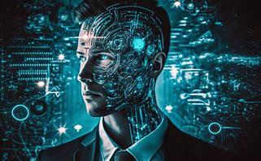
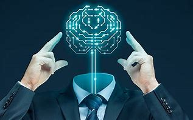
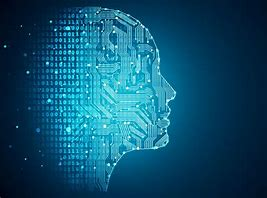
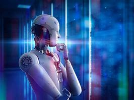

SI to sztuczna inteligencja. Jest to dziedzina nauki, która obejmuje zagadnienia takie jak logika rozmyta, obliczenia ewolucyjne, sieci neuronowe, sztuczne życie i robotyka. W skrócie, SI to obszar, w którym badamy i tworzymy systemy komputerowe, które wykazują pewne formy inteligencji, naśladując w pewien sposób ludzkie myślenie i zachowanie.
XIX wiek: W tym okresie komputery elektroniczne były technologią w fazie rozwoju. George Boole, brytyjski matematyk, opracował pierwsze równania logiczne, które stały się podstawą dla późniejszych koncepcji związanych ze sztuczną inteligencją.
Ada Lovelace: Córka Lorda Byrona i siostra Percy Bysshe Shelleya, Ada Lovelace, badała, jak modelować skomplikowane obliczenia matematyczne za pomocą równań logicznych Boole’a. Jej praca przyczyniła się do rozwoju koncepcji SI.
Silnik analityczny: W 1866 roku Ada King Lovelace stworzyła “Silnik analityczny” (znany również jako “pierwszy komputer”), który był zaprojektowany do wykonywania obliczeń matematycznych. To jeden z najważniejszych wynalazków w historii ludzkości.
Lata 60-70: Badania nad SI przyspieszyły. W latach 90. Apple i IBM przełamały ograniczenia obliczeniowe, otwierając nowe możliwości.
Automatyczne tłumaczenie: W 1988 roku rozpoczęto prace nad automatycznym tłumaczeniem, co również wpłynęło na rozwój SI.
Uczenie maszynowe: SI jest teraz związana z głębokim uczeniem i przetwarzaniem języka naturalnego.
Przyszłość: SI ma potencjał głęboko zmienić świat, od eksploracji kosmosu po leczenie i działania informatyczne.
 Sztuczna inteligencja, SI (ang. artificial intelligence, AI) – inteligencja wykazywana przez urządzenia sztuczne (w przeciwieństwie do inteligencji naturalnej). John McCarthy jest uznawany za autora tego terminu, jednak koncepcje i badania sięgają wcześniejszych lat, a wkład w rozwój SI mieli również inni pionierzy, jak Alan Turing czy Marvin Minsky. W potocznym rozumieniu jest ona często używana w kontekście „prawdziwej sztucznej inteligencji”. W informatyce i kognitywistyce oznacza także tworzenie modeli i programów symulujących choć częściowo zachowania inteligentne. Sztuczna inteligencja jest także przedmiotem rozważań filozofii (filozofia sztucznej inteligencji) oraz przedmiotem zainteresowania nauk społecznych.
Termin „sztuczna inteligencja” wymyślił John McCarthy w 1956 na konferencji w Dartmouth. Andreas Kaplan i Michael Haenlein definiują sztuczną inteligencję jako „zdolność systemu do prawidłowego interpretowania danych pochodzących z zewnętrznych źródeł, nauki na ich podstawie oraz wykorzystywania tej wiedzy, aby wykonywać określone zadania i osiągać cele poprzez elastyczne dostosowanie”. Sztuczną inteligencją zajmowali się m.in. Marvin Minsky, John McCarthy, Alan Turing, Edward Feigenbaum, Raj Reddy, Judea Pearl, Allen Newell, Herbert A. Simon.
jest to hipotetyczna inteligencja realizowana w procesie technicznym, a nie naturalnym
jest to nazwa technologii i dziedzina badań naukowych informatyki i kognitywistyki czerpiąca także z osiągnięć psychologii, neurologii, matematyki i filozofii.
Głównym zadaniem badań nad sztuczną inteligencją w drugim znaczeniu jest konstruowanie maszyn i programów komputerowych zdolnych do realizacji wybranych funkcji umysłu i ludzkich zmysłów, niepoddających się numerycznej algorytmizacji. Problemy takie bywają nazywane AI-trudnymi i zalicza się do nich między innymi:
podejmowanie decyzji w warunkach braku wszystkich danych
analiza i synteza języków naturalnych
rozumowanie logiczne/racjonalne
automatyczne dowodzenie twierdzeń
komputerowe gry logiczne, np. szachy, go
inteligentne roboty
systemy eksperckie i diagnostyczne.
Sztuczna inteligencja jest powiązana z obszarami uczenia maszynowego, logiki rozmytej, widzenia komputerowego, obliczeń ewolucyjnych, sieci neuronowych, robotyki i sztucznego życia.
W 1950 roku Alan Mathison Turing zaproponował, by możliwość udawania człowieka w zdalnej rozmowie uznać za test inteligencji maszyn (test Turinga). W latach 50. XX wieku zorganizowano pierwsze seminarium poświęcone AI (tzw. Warsztaty w Dartmouth[w innych językach]), a także powstało pierwsze laboratorium AI na Carnegie Mellon University, założone przez Allena Newella i Herberta Simona i kilka lat później analogiczne laboratorium w Massachusetts Institute of Technology, założone przez Johna McCarthy’ego. Oba te laboratoria są wciąż wiodącymi ośrodkami AI na świecie.
Termin „sztuczna inteligencja” został po raz pierwszy zaproponowany prawdopodobnie przez Johna McCarthy’ego, który w 1955 r. zdefiniował go w następujący sposób:
„konstruowanie maszyn, o których działaniu dałoby się powiedzieć, że są podobne do ludzkich przejawów inteligencji”.
Pierwsze to tworzenie modeli matematyczno-logicznych analizowanych problemów i implementowanie ich w formie programów komputerowych, mających realizować konkretne funkcje uważane powszechnie za składowe inteligencji. W tej grupie, tzw. podejścia symbolicznego, są np. algorytmy genetyczne, metody logiki rozmytej i wnioskowania bazującego na doświadczeniu.
Drugie to podejście subsymboliczne, polegające na tworzeniu struktur i programów „samouczących się”, bazujących na modelach sieci neuronowej i sieci asocjacyjnych, oraz opracowywanie procedur „uczenia” takich programów, rozwiązywania postawionych im zadań i szukania odpowiedzi na wybrane klasy „pytań”.
W trakcie wieloletniej pracy laboratoriów i zespołów AI stosujących oba podejścia do problemu, okazało się, że postęp w tej dziedzinie jest i będzie bardzo trudny i powolny. Często mimo niepowodzeń w osiąganiu celów, laboratoria te wypracowywały nowe techniki informatyczne, które okazywały się użyteczne do zupełnie innych celów. Przykładami takich technik są np. języki programowania LISP i Prolog. Laboratoria AI stały się też „rozsadnikiem” kultury hakerskiej.
Najnowsze podejście do problemów AI to rozwijanie różnych form inteligencji rozproszonej (wzorowanej na organizacjach ludzkich, np. personoidy) oraz tzw. agentów autonomicznych i „inteligentnych”. Dziedzina ta nosi nazwę Technologii Agentów Inteligentnych (ang. Intelligent Agent Technology).
94 proc. polskich specjalistów i specjalistek IT o różnych poziomach doświadczenia wykorzystuje narzędzia AI w codziennej pracy, natomiast 28,7 proc. obawia się, że w ciągu najbliższych kilku lat sztuczna inteligencja zastąpi ich w pracy.
 